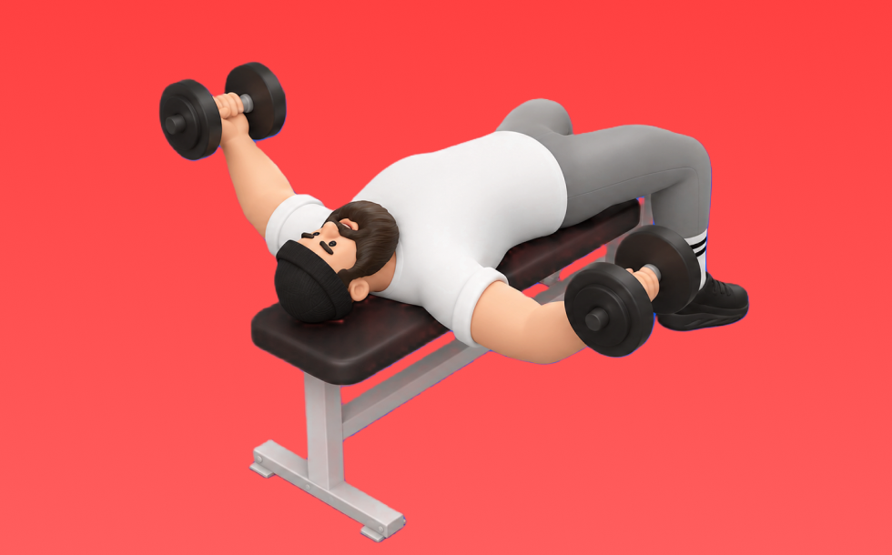

ダンベルフライ

ダンベルフライとは、ダンベルを使って「腕を開いて閉じる」動作で胸（大胸筋）を鍛える種目です。可動域が広く、左右のバランスを整えやすいのが特徴で、腕を大きく開いて胸で閉じる動作を繰り返します。胸の収縮感を高め、形づくりに役立つ効果が期待できます。
- 対象部位
- 胸
- 器具
- ダンベル
- 記録形式
- 重量・回数
- 別名
- DBフライ / db fly
YouTube動画
-
【間違ったフォーム解説】ダンベルフライで胸に効かすなら、このフォームをマスターしよう！
-
【初心者】ダンベルフライの正しいやり方【ビーレジェンド プロテイン】
-
【ダンベルフライ】初心者が肩を怪我せず、大胸筋を鍛えるフォーム解説
-
【大胸筋】胸を大きくするための種目、ダンベルフライとダンベルベンチプレスの正しいフォームを比較解説【胸トレ】
-
【大胸筋筋トレ】ダンベルフライの正しいフォーム・やり方・コツ | 「肩が疲れる」「腕に効いてしまう」という方はぜひ！
-
【ダンベルフライとダンベルベンチプレス】正しいフォームと使い分け徹底解説（胸トレ）
-
ダンベルフライで大胸筋に効かないフォーム4選！効果的に鍛えるやり方を解説【脱初心者筋トレ講座】
-
【脱初心者】ダンベルフライで大胸筋に確実に効くフォームを『フロアフライ』でマスターする練習法を解説＆実演
-
【ダンベルプレス・ダンベルフライ】女子必見 胸周りの立体感を出すダンベルの種目解説
-
【胸トレ解説】初心者でも胸に効かせるコツ！ダンベルがあればOK
-
【筋トレ】大胸筋を鍛えるのに最適なダンベルフライで絶対に注意しなければいけないことをまとめました。
-
【筋トレ】胸の内側まで効かせるダンベルフライのやり方を解説
-
【胸トレ】最強の大胸筋を作るダンベルチェストフライ3種目を徹底解説です。初心者の方でも自宅でのトレーニングの方も出来るやり方あります。
-
【筋トレ】大胸筋を鍛えるのに最適なダンベルフライで絶対に注意しなければいけないことをまとめました。
-
【胸をデカくしたい方へ】誰でもできるダンベルフライのやり方を本気で解説します
-
実は間違っていたダンベルフライの効かせ方
-
【筋トレ悪いフォーム解説】ダンベルフライで的確に大胸筋へ効かすテクニック！
-
【筋トレ】大胸筋に効く！ダンベルフライのフォームを山本義徳先生が実践
-
2分で分かるダンベルフライ【筋トレ初心者向け】
-
【解説】腕がツラくない！ダンベルフライ
-
やれば必ずデカくなる！胸トレ最強種目を徹底解説！！
-
【大胸筋トレ】ダンベルフライが胸に効かない原因が判明！追い込むためのテクニックも教えます【筋トレ】
YouTubeショート
-
【ダンベルフライ正しいやり方】理想と間違い #筋トレ #ボディメイク #ボディビル #プロテイン #tryve #ボディメイク
-
【ダンベル】胸全部鍛えるトレーニング４選 #筋トレ
-
インクラインダンベルフライを上手く効かせる方法 #筋トレ #胸トレ #トレーニング #workout #ホームトレーニング #ホームトレーニー #fitness #training
-
正しいダンベルベンチプレス5つのポイント 【筋トレ】
-
正しいダンベルフライの３つのポイント【胸トレ】
-
胸トレ1種目しかできないならどっち？ #山本義徳 #shorts
-
胸が成長しないダンベルプレス #筋トレ
-
正しいダンベルロウ4つのポイント #筋トレ
-
【大胸筋】ダンベルプレス良くある初心者エラー
-
【筋トレ】ペックフライのやり方＃筋トレ＃筋肉＃ペックフライ＃胸トレ#chesttraining g
-
持田選手にダンベルフライについてレクチャーしていてもらいました！次はどの種目の解説をやってほしいかコメントしてね！#筋トレ #volix #トレーニング #fitness #workout
-
ダンベルフライのやり方解説 #筋トレ #筋肉 #トレーニング #ボディメイク #ボディビル
-
胸トレのやり方🔥〜ダンベルプレス基礎編〜 #筋トレ #筋肉 #筋肉社長 #胸トレ
-
このダンベルフライはやめろ！#shorts
-
みなさんはダンベルフライやってますか？持田選手が大胸筋に効くトレーニングをレクチャーしてくれました！#筋トレ #volix #大胸筋 #ちょこっとおしい #胸トレ
-
【ダンベル】肩トレ3選 #筋トレ
-
【こんなダンベルフライは辞めろ】肩を痛めない正しいフォーム
-
胸トレで腕肩を使わないコツ #筋トレ女子
-
ダンベルフライは上げすぎるな
-
胸の筋肉はこれやっとけばデカくなるわ。#shorts
-
正しいサイドレイズ4つのポイント #筋トレ
-
綺麗な大胸筋をつくるオススメトレーニング3選
-
ペックフライのフォームについてです✨
-
インクラインプレスで大胸筋上部を鍛える2つのポイント #フィットネス #筋トレ
-
ダンベルフライのフォーム#shorts
-
ペックフライこれやってない？#胸トレ#ペックフライ#筋トレ#shorts
-
ダンベル・ベンチプレスの正しいやり方 | ボディビル日本チャンピオンが解説 #shorts【ビーレジェンド プロテイン】
-
【SGIR】胸トレ3種目だけなら何選ぶ？
動作方法
- 安定した姿勢を作り、肩と体幹を固定する
- 狙う部位を意識して、反動を使わずに押す
- 可動域を保ちながら、ゆっくり元に戻す
動作ポイント
- 肩をすくめない
- 手首を寝かせすぎない
- 反動を使いすぎない
ワンポイントアドバイス
- 最初は可動域を優先してフォームを固める
- 肩に違和感がある日は重量を落として調整する
目的別回数設定
目的や体力に応じた一般的な目安です。無理のない範囲で調整してください。
- 筋力アップ
- 1〜5回
- 筋肥大
- 6〜12回
- 持久力アップ
- 13〜20回
YouTube動画について
動画はYouTubeの公開情報をもとに表示しています。内容は投稿者によるもので、Biggrによる監修ではありません。
アプリを入手
筋トレやトレーニングの記録はBiggrにお任せください。今すぐ無料で使い始められます。